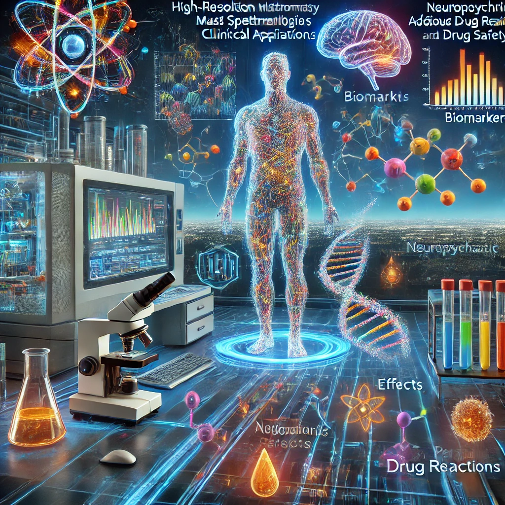
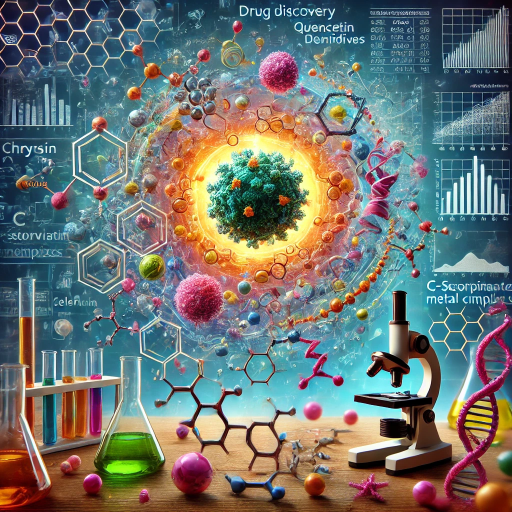
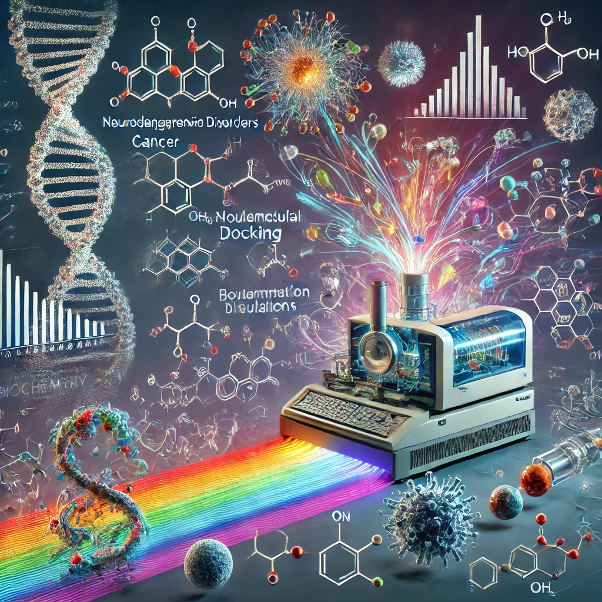

Clinical omics
Biomarkers, drug safety, and translational applications from high-resolution mass spectrometry and multi-omics data.
Research themes
Mass spectrometry, multi-omics, computational biochemistry, and experimental biology applied to disease mechanisms and therapeutic discovery.

Biomarkers, drug safety, and translational applications from high-resolution mass spectrometry and multi-omics data.

Mechanistic studies and new lead compounds for cancer therapy and personalised treatment.

Chemical-biological interactions, molecular modelling, and therapeutic mechanisms for complex disease.